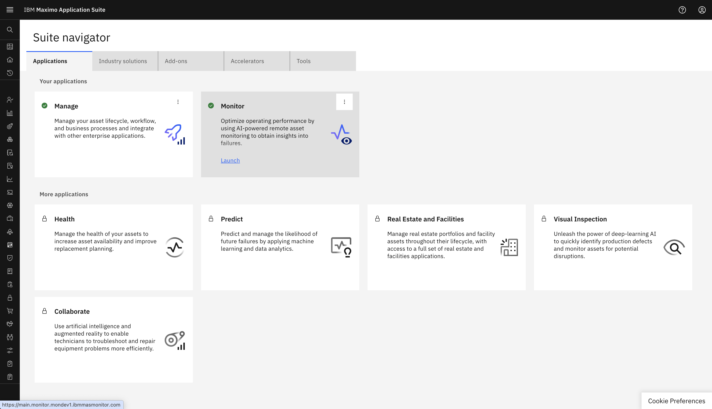

Objectives
In this Exercise you will learn how to Configure Maximo Real Estate and Facilities Integration.
Before you begin:
This Exercise requires that you have:
- completed the pre-requisites required for all labs
- completed the previous exercises
You can configure only one integration with Maximo Real Estate and Facilities.
Login to MAS: 
Navigate to the Integration Page:
You can add a new integration from the Add Integration button
Select Real Estate and Facilities from integration type list and click Next.

Here, In the INTEGRATION NAME field, specify a name.
In the Maximo Real Estate and Facilities URL field, specify the URL for your Maximo Real Estate and Facilities instance.
In the Administrative user ID field, specify the administrative user's ID.
In the Administrative password field, specify the administrative user's password.
Click Finish:

Congratulations you have successfully configured Maximo Real Estate and reality Integration.
MREF Integration will display in Integration list:
You can edit Maximo Real Estate and Facility Configuration from the Edit button provided with the configuration.
You can update the Real Estate and Facilities URL , USER ID and PASSWORD from TRIRIGA instance. You will not be able to edit the Integration Name.